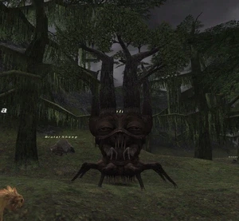

Level 75 reference · Zenith rules
|
Job: Notorious Monster |
 |

| Zone | Level | Drops | Steal | Spawns | Notes | ||||||
| Jugner Forest | 30-40 |
|
1 | A,H
| |||||||
HP = Detects Low HP; M = Detects Magic; Sc = Follows by Scent; T(S) = True-sight; T(H) = True-hearing JA = Detects job abilities; WS = Detects weaponskills; Z(D) = Asleep in Daytime; Z(N) = Asleep at Nighttime | |||||||||||
|
Notes:
|
|
Adapted from Eden Wiki: Fraelissa · Contributors and history · CC BY-SA 4.0. Revision 44637. Layout, links and optional background text adapted for Zenith.